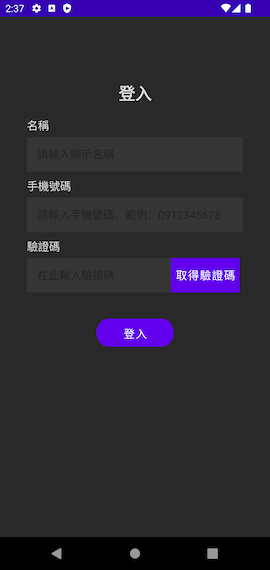
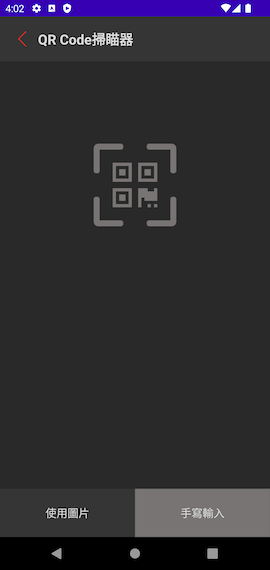

功能說明¶
這裡會簡單說明 Arctos Client SDK 的操作流程，以及各頁面的功能。
概觀¶
Arctos Client SDK 大致包含「登入畫面」、「主畫面與連線設備列表」、「QR Code 掃描器」與「通話畫面」等四個主要操作畫面。他們之間的畫面跳轉與狀態變化為：
開始¶
APP 可以使用 startActivity() 啟動 Arctos Client SDK 的功能：
登入畫面¶
登入畫面是 Arctos Client SDK 的進入點。使用者會在這邊提供自己的手機號碼，並接收來自伺服器的驗證碼，進行 OTP 驗證。

- 名稱：使用者在這裡輸入一個自訂的裝置名稱，供後續辨識使用。
- 手機號碼：使用者在這裡輸入裝置的手機號碼，以接收驗證碼。
- 取得驗證碼：按下此按鈕，裝置就會接收到伺服器送來的驗證碼。驗證碼為 6 位數字。
- 驗證碼：在此欄位輸入接收到的驗證碼。
- 登入：若以上欄位皆填寫正確，按下登入按鈕後，就可以進入主畫面。
重要
在開發階段取得的驗證用 Arctos Client SDK，其登入功能不會串接到網路伺服器，而是僅在本地端模擬伺服器的功能與行為。同樣的，發送驗證碼的功能也並未實際發送、接收簡訊。這是為了在開發階段加快測試速度，並減少伺服器建制的負擔。
主畫面與連線設備列表¶
主畫面上半部會顯示通話對象設備的名稱，下半部則會列出可以連線的設備列表。畫面的右上方則有畫面資訊說明，以及增加好友的按鈕圖示。
- 注意事項：點選後，會顯示本畫面的注意事項說明。
- 新增好友：點選後，會進入 QR Code 掃描畫面。請見下一章節說明。
- 連線設備選擇：如果有與其他 Arctos Switch 裝置成為好友，在這裡會顯示裝置名稱與狀態。
- 設定：點選裝置名稱右方的齒輪圖示，可以修改此裝置的顯示名稱。
- 選擇裝置：點選裝置名稱，選擇此裝置做為之後的通訊對象。
- 開始通訊：一旦選擇了指定裝置為通訊對象，按下「開始通訊」按鈕，即可邀請裝置進行通訊。
QR Code 掃描器¶
使用者可以在此頁面掃描 Arctos Switch 上顯示的 QR Code，藉此和 Arctos Switch 裝置成為好友。
如同常見的即時通訊軟體，Arctos Client 也有好友的概念。兩個裝置必須先當面透過掃描 QR Code 的方式交換資訊，接著才能透過網際網路查找對方，並建立點對點的安全通訊管道。
只有在雙方互相成為好友，且都已經上線時，才能建立影音通訊。

- QR Code 圖示：點選後，會開啟相機後鏡頭，進行 QR Code 掃描。
- 使用圖片：點選後會開啟檔案瀏覽器，可在此選擇 QR Code 圖檔，不使用相機掃描。
- 手寫輸入：使用者可以在此手動輸入代表 Arctos Switch 裝置的特定字串。
使用以上三種方式之一，都可以成功邀請 Arctos Switch 裝置成為好友，並自動交換資訊。詳細步驟請參考 測試與驗證 中的說明。
通話畫面¶
在主畫面選擇裝置、開始通訊並建立起通話後，便會進入 Arctos Client 的通話畫面。

畫面大部分都是顯示來自通話對方的畫面，而左下角則會顯示 Arctos Client 裝置自己的相機鏡頭預覽畫面。
- 鏡頭翻轉：點選畫面下方的圖示，可以切換裝置前後鏡頭。
- 掛斷：點選畫面右下角的紅色電話圖示，即可結束通話，返回主畫面。
重要
Arctos Client 通訊畫面固定為橫向，與系統設定無關。
結束¶
離開 Arctos Client SDK 有兩種情況。一種情況是，在進入登入畫面時，使用者不登入而直接返回（按下 back 鍵）。此時，會回到開始前呼叫 startActivity() 的畫面。
另一種情況是，在成功登入進到主畫面後，使用者使用了一段時間後，在主畫面返回（按下 back 鍵）。此時，不會返回到登入頁，而是直接回到開始前呼叫 startActivity() 的畫面。